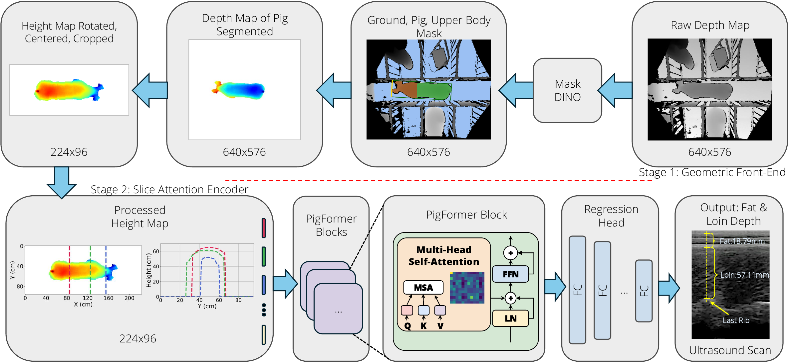

Abstract
Sow body condition is an important indicator for growers as it has a large impact on lactation performance and piglet survival. However, body condition measures used during production, such as visual scoring and calipers, correlate poorly with underlying tissue composition. Ultrasound scans can provide direct measurements of subcutaneous backfat thickness and loin muscle depth, but their operation is labor intensive and not scalable for production. We present PigFormer, an end-to-end two-stage system that takes raw depth frames from a ceiling-mounted RGB-D camera and predicts subcutaneous backfat thickness, loin muscle depth, and total tissue thickness at the last rib. Stage 1 is a geometric front-end that converts raw depth into a standardized height map via SAM3-to-MaskDINO segmentation distillation, ground-plane removal, and orientation normalization. Stage 2 is a Slice Attention Encoder that treats each height map as a sequence of cross-sectional slices and captures spatial relationships along the full dorsal surface. On a multi-site dataset of 319 sow and gilt instances (6,705 frames) from two facilities, PigFormer achieves 2.43 mm backfat MAE and 3.87 mm overall MAE. It outperforms strong single-stage ResNet-18 and ViT-small baselines that feed raw depth directly to a pretrained backbone, isolating the contribution of Stage 1.
Results
Held-out test results on 79 sow / gilt instances. MAE in mm. Per-frame inference measured on A100 with batch = 1 (MaskDINO Stage 1 in fp16; UNet Stage 1, single-stage backbones, and PigFormer Stage 2 in fp32). Single-stage baselines feed raw depth directly to an ImageNet-pretrained backbone and predict fat and loin only (total is ŷf + ŷl at evaluation). PigFormer numbers are 4-fold cross-validation ensembles with output aggregation. Best MAE in bold.
| Method | Backbone | Inference (ms / frame) | MAE (mm) ↓ | ||||
|---|---|---|---|---|---|---|---|
| Stage 1 | Stage 2 | Fat | Loin | Total | Overall | ||
| ViT-small (single-stage) | ViT-S/16 | — | 4.98 | 3.57 | 7.29 | 8.16 | 6.34 |
| ResNet-18 (single-stage) | ResNet-18 | — | 2.88 | 2.88 | 6.10 | 5.81 | 4.93 |
| PigFormer | MaskDINO (R50-300q-9L) | 106.92 | 0.50 | 2.43 | 5.01 | 4.19 | 3.87 |
| PigFormer | Pruned MaskDINO (R18-50q-5L) | 52.73 | 0.50 | 2.34 | 5.27 | 4.20 | 3.94 |
| PigFormer | UNet (MobileNetV3-Small) | 6.58 | 0.50 | 2.40 | 5.20 | 4.26 | 3.95 |
| Human Ultrasound Std | — | — | — | 1.30 | 2.02 | 2.29 | 1.87 |
End-to-end PigFormer with the UNet Stage 1 runs in ≈ 7 ms / frame on a single A100, fast enough for real-time monitoring on an installed-camera stream. The pruned MaskDINO retains the detection-style inductive bias for out-of-distribution content (handlers, empty pens) at half the latency of the original.
Citation
@inproceedings{bashar2026pigformer,
title = {What's Under the Skin? Estimating Swine Body Condition},
author = {Bashar, Mk and Bhatti, Kuljit and Rohrer, Gary
and Benjamin, Madonna and Brown-Brandl, Tami
and Morris, Daniel},
booktitle = {CV4Animals Workshop, IEEE/CVF Conference on Computer Vision
and Pattern Recognition (CVPR)},
year = {2026}
}